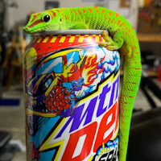
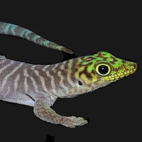
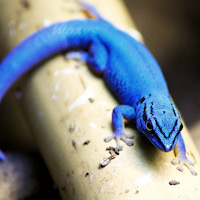
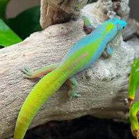
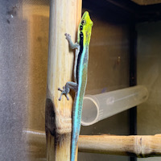
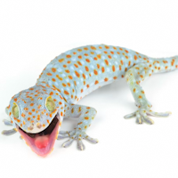
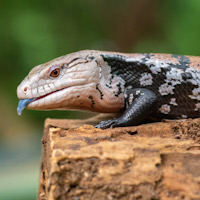
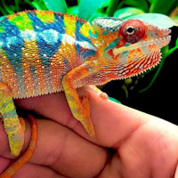
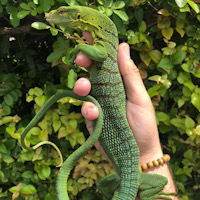

| Picture | Species | Scientific Name | Size | Lifespan | Price | Description |
|---|---|---|---|---|---|---|
|  | Very intelligent and curious/ skittish geckos. Price depends on morph or if wild caught. Regular ones are more green with less red spots. High red morphs are more expensive and have more red. Blue blood morphs are the most expensive with blue on the bellies and towards the head. Most generally don't like being handled/ should not be handled as they can "drop" skin off like dropping tails. Different from skin shed. They can literally let go of their skin. I call them zombie lizards. The more intelligent/curious ones will make an exception and let you get close or touch/ handle them. Bioactive enclosure required. |
|||||
|  | their body. Unfortunately their color fades as they get older and they turn kinda grey with very faded colors which is why they don't get very pricey. Similar personality to regular day geckos. Bioactive enclosure required. |
|||||
|  | to come by but are becoming more obtainable. Females are not blue more greenish/brown and are cheaper than the males. Much more sensitive to environment so their humidity and temperature settings must be precise. Are not as forgiving as other species on this list if their requirements for their environment are not met. Advanced geckos and should not be handled. Personality wise very skittish but some individuals can be curious and let you get close. Bioactive enclosure required. |
|||||
|  | to come by as this specific morph is really hard to breed and takes a long time to achieve. Similar personality as well to regular day geckos. Biaoctive required. |
|||||
|  | to their environment and requirements need to be met. Consume pinhead crickets and fruit flies. Bioactive enclosure required. |
|||||
|  | and viewed as difficult to tame. This one like all geckos above require bioactive eclosures. This one is the most adaptable to it's environment and there's room for "human error" in their requirements. They won't perish as easily if you mess up. Most vocal of all the species in this list. "Croak" when angry or get defensive. |
|||||
|  | a potato with legs. Also have a wide variety diet and can pretty much eat your table scraps. Very friendly and can be easily handled without having to train the animal to be used to it. |
|||||
|  | recommended to handle. Some make exceptions. They don't require bioactive but need vertical space and branches to climb. Screen cages best as they need ventilation. Can come in a variety of colors How colorful an individual is also determines its price. |
|||||
|  | keepers. They're incredibly intelligent and personable, however similar to crocodilians and other monitors and even iguanas they're difficult to break down and really stick to their instincts. For example most captive bred bearded dragons you can pick up and kinda play with them whenever. They're not going to care or do anything. These guys even tamed and with routine can just switch back to their old ways and snap in an instant. Even if captive bred, you have to really pay attention to their signals or you can lose a finger. |